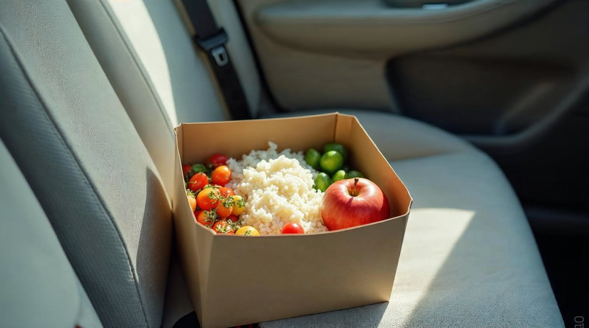
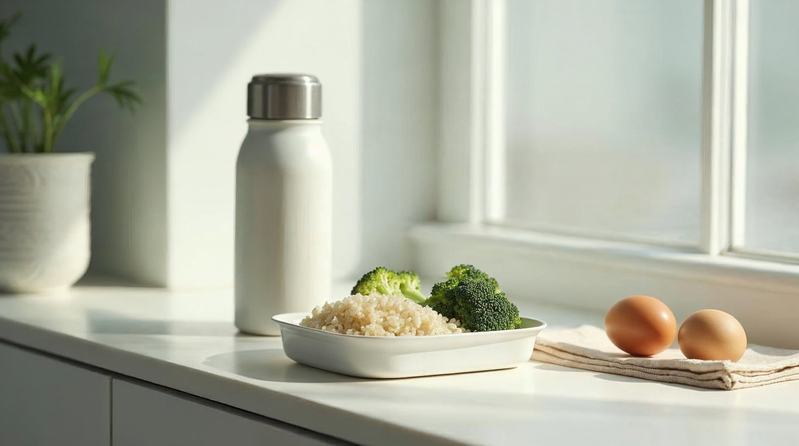
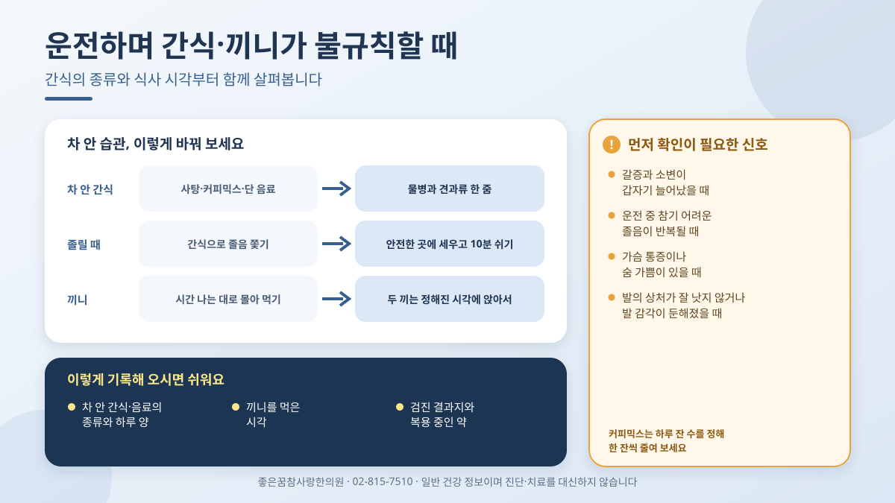

이종호 한의사 감수좋은꿈참사랑한의원 대표원장 (한의사 면허번호 19769)발행 2026-11-23 · 수정 2026-11-26
이 글의 차례
운전을 오래 하는 분들은 졸음을 쫓으려고 사탕, 커피믹스, 단 음료를 곁에 두는 경우가 많습니다. 끼니는 시간이 나는 대로 먹다 보니 하루 식사가 들쭉날쭉해지는데, 이럴 때는 간식의 종류와 식사 시각부터 함께 살펴봅니다.
운전석 옆 컵홀더와 문 주머니를 보면 그분의 하루가 보인다는 말이 있습니다. 반쯤 남은 캔커피, 사탕 봉지, 과자 부스러기가 쌓여 있다면, 끼니 사이를 간식으로 이어 붙이며 버티고 있다는 신호일 때가 많습니다.
이렇게 몇 년을 지내다 검진에서 "체중이 늘었다", "혈당이 경계선이다"라는 말을 듣고 오시는 분이 적지 않습니다. 저는 이럴 때 먹는 양을 무작정 줄이자고 하기보다, 차 안의 간식과 끼니 시각부터 하나씩 바꿔 보자고 말씀드립니다.
운전 일은 쉬는 시간과 식사 시간을 스스로 정하기 어려운 일입니다. 그래서 '의지가 약해서 간식을 먹는다'고 자책하실 일이 아닙니다. 일의 구조가 그렇게 만드는 부분이 크니, 그 구조 안에서 바꿀 수 있는 곳을 찾는 것이 먼저입니다.
왜 이런 불편이 생길 수 있나요
- 단 음료와 간식을 조금씩 자주 먹으면 하루 먹는 양이 생각보다 늘어나는 경우가 많습니다.
- 끼니를 거르다 한 번에 몰아 먹으면 식사 뒤 졸음과 허기가 번갈아 오기 쉽습니다.
- 오래 앉아 있으면 움직이는 양이 줄어 체중이 조금씩 늘 수 있습니다.
- 잠이 부족하면 단 음식이 더 당기는 경우가 있습니다.
- 운전은 긴장을 오래 유지하는 일이라, 입이 심심하거나 지루할 때 손이 간식으로 가는 습관이 생기기 쉽습니다.
- 커피믹스 한 잔에도 설탕과 크림이 들어 있어, 하루 대여섯 잔이면 간식 한 끼에 가까운 양이 되기도 합니다.
왜 단 것을 먹으면 졸음이 더 오는 것 같을까요?
졸릴 때 사탕이나 단 음료를 먹으면 잠깐은 정신이 드는 듯합니다. 그런데 한두 시간 지나면 다시 나른해지고, 또 단 것을 찾게 되는 흐름을 겪는 분이 많습니다. 단 음식은 빨리 흡수되는 만큼 금세 기운이 꺼지는 느낌을 남기기 쉽기 때문입니다.
끼니를 오래 거른 뒤 한꺼번에 많이 먹을 때도 비슷합니다. 식사 뒤 졸음이 몰려오고, 그 졸음을 다시 커피믹스와 사탕으로 쫓는 식으로 하루가 이어집니다. 그래서 간식만 줄이기보다 끼니 간격을 고르게 하는 것이 함께 가야 합니다.
한의학에서는 단맛이 지나치면 소화를 맡은 기운이 무거워지고 몸에 습(濕)이 쌓이기 쉽다고 봅니다. 몸이 무겁고 나른하며 식후 졸음이 심한 분들에게서 이런 흐름이 자주 보여, 먹는 것과 함께 움직임과 잠을 같이 살핍니다.
졸음과 허기, 피로는 어떻게 나눠 볼까요?
- 식사 뒤 30분~1시간 사이 졸음이 몰려온다면, 한 번에 먹는 양과 단 음식, 밥의 양을 먼저 살핍니다.
- 끼니 사이가 길어질 때 손이 떨리고 기운이 쭉 빠진다면, 첫 끼 시각과 끼니 간격을 먼저 봅니다.
- 밥을 제때 먹어도 하루 종일 졸리다면, 밤잠이 모자라거나 코골이로 잠이 자주 끊기지 않는지를 함께 봅니다.
- 물을 마셔도 갈증이 심하고 소변이 잦아졌다면, 혈당 확인이 필요한지 먼저 살핍니다.
먼저 이렇게 여쭙니다
- 차 안에 두고 먹는 간식과 음료는 무엇인가요?
- 하루 끼니는 몇 번, 몇 시쯤 드시나요?
- 밤에 몇 시간 정도 주무시나요?
- 최근 체중이나 허리둘레에 변화가 있나요?
- 검진에서 혈압·혈당 이야기를 들은 적이 있나요?
- 운전 중 졸음은 하루 중 언제 주로 오나요?
- 가족 가운데 당뇨나 고혈압이 있는 분이 있나요?
- 퇴근 뒤 저녁과 술은 어떻게 드시나요?
일상에서 먼저 해 볼 수 있는 것
- 차 안에는 물과 견과류처럼 덜 단 간식 두기
- 졸릴 때는 간식 대신 안전한 곳에 차를 세우고 잠깐 쉬기
- 하루 두 끼는 정해진 시각에 앉아서 먹기
- 커피믹스는 하루 잔 수를 정해 두고 한 잔씩 줄여 보기
- 휴식 시간에 차 주변을 몇 분 걷기
예를 들어 차 안의 사탕과 단 음료 자리를 물병과 견과류 한 줌으로 바꾸고, 졸음이 오면 휴게소에 들러 졸음이 가실 때까지 쉬며 스트레칭한 뒤 다시 출발해 보세요. 점심과 저녁은 휴게 시간에 맞춰 시각을 정해 두면 몰아 먹는 날이 줄어듭니다.
식사할 때는 채소나 국을 먼저 몇 숟가락 먹고, 단백질 반찬, 밥 순서로 천천히 먹어 보세요. 같은 양을 먹어도 식후 졸음이 덜하다는 분이 많습니다. 휴게소 식당에서는 면류나 덮밥 한 그릇보다 밥과 국, 반찬이 따로 나오는 메뉴를 고르면 이 순서를 지키기 쉽습니다.
차 안 간식, 이렇게 바꿔 볼 수 있습니다
- 사탕·젤리 → 무가당 껌이나 견과류 한 줌
- 커피믹스 → 블랙커피나 보리차, 따뜻한 물
- 단 캔커피·탄산음료 → 물이나 탄산수
- 과자 봉지 → 삶은 달걀, 방울토마토, 오이 스틱
한꺼번에 다 바꾸기는 어렵습니다. 일주일에 한 가지씩, 가장 자주 손이 가는 것부터 바꿔 보세요. 차에 사 두지 않는 것만으로도 먹는 양이 꽤 줄었다는 말씀을 자주 듣습니다.
입이 심심해서 먹는 것인지, 정말 배가 고파서 먹는 것인지도 한 번씩 스스로에게 물어보세요. 심심해서라면 물 한 모금이나 껌으로, 배가 고파서라면 견과류나 달걀처럼 든든한 것으로 채우는 식으로 나눠 대응하면 간식의 양이 자연스럽게 줄어듭니다. 이 질문 하나만 습관이 되어도 차 안의 풍경이 달라집니다.
오래 앉아 있는 하루, 움직임은 어떻게 늘릴까요?
운전하는 분께 "운동하세요"라는 말은 공허하게 들리기 쉽습니다. 하루 열 시간 가까이 운전석에 앉아 있다 퇴근하면 운동할 기운이 남아 있지 않기 때문입니다. 그래서 따로 시간을 내기보다 일 사이사이에 움직임을 끼워 넣는 쪽을 권합니다.
- 휴게소나 차고지에 도착하면 화장실을 가장 먼 쪽으로 골라 걸어갑니다.
- 손님이나 배차를 기다리는 동안 차에서 내려 5분쯤 주변을 걷습니다.
- 식사 뒤에는 바로 운전석에 앉기보다 10분쯤 걸은 뒤 출발합니다.
- 쉬는 날에는 30분 이상 걷는 날을 일주일에 두세 번 정해 둡니다.
이렇게 짧은 움직임이 쌓이면 식후 졸음이 덜하고, 오래 앉아 뻐근하던 허리와 다리도 한결 가볍다는 분이 많습니다.
잠이 모자라면 간식이 더 당기나요?
새벽 일찍 출근하거나 야간 운행을 하는 분은 잠이 늘 모자라기 쉽습니다. 잠이 부족한 날에는 단 음식과 기름진 음식이 더 당기고, 배가 불러도 손이 계속 간다는 분이 많습니다.
간식을 줄이려고 애써도 잘 안 된다면, 먼저 밤잠 시간을 살펴보세요. 잠자리에 드는 시각을 30분만 당겨도 다음 날 간식에 손이 덜 간다는 말씀을 듣습니다. 코골이가 심하거나 자고 일어나도 개운하지 않다면, 잠의 질도 함께 살펴볼 필요가 있습니다.
상황별 예시
- 예를 들어 고속버스나 화물차로 장거리를 운행하며 휴게소마다 핫바와 커피를 사는 경우, 휴게소 두 곳 중 한 곳은 사지 않고 걷기만 하는 곳으로 정해 두고, 대신 집에서 견과류와 물을 챙겨 나옵니다.
- 예를 들어 택시 운행 중 끼니를 거르고 오후 4시에 첫 식사를 하는 경우, 출근 전 집에서 달걀과 밥 반 공기라도 먹고 나와 첫 끼 간격을 줄여 봅니다.
- 예를 들어 학원 차량이나 통근 버스처럼 오전과 오후에만 운행하고 낮에 긴 공백이 있는 경우, 공백 시간에 차 안에서 간식을 먹으며 기다리기보다 그 시간에 점심을 앉아서 먹고 30분쯤 걷는 일정으로 채워 봅니다.
- 예를 들어 야간 운행 중 졸음을 쫓으려 새벽마다 컵라면과 단 음료를 먹는 경우, 새벽 간식은 두유나 바나나처럼 가벼운 것으로 바꾸고, 졸음이 심하면 차를 세우고 15~20분 눈을 붙이는 쪽을 먼저 택합니다.
퇴근 뒤 저녁과 술은 어떻게 할까요?
하루 종일 제대로 먹지 못한 날일수록 퇴근 뒤 저녁을 푸짐하게 먹고, 하루를 마감하는 술 한두 잔을 곁들이는 분이 많습니다. 늦은 시간에 많이 먹고 바로 잠들면 다음 날 아침 속이 무겁고, 입맛이 없어 아침을 거르는 흐름이 다시 시작됩니다.
저녁은 잠들기 두세 시간 전에 마치고, 낮에 모자랐던 채소와 단백질 반찬을 넉넉히 챙겨 보세요. 술은 마시는 요일을 정해 횟수부터 줄이고, 안주는 튀김보다 두부나 생선, 채소 쪽을 고르면 다음 날 몸이 한결 가볍습니다.
쉬는 날 몰아 먹기를 줄이려면
쉬는 날이 되면 그동안 못 먹은 것을 보상하듯 배달 음식이나 외식으로 몰아 먹는 분이 많습니다. 평일에 아낀 것이 쉬는 날 한꺼번에 채워지면 체중은 좀처럼 움직이지 않습니다.
쉬는 날에도 세 끼를 비슷한 시각에 먹고, 한 끼만 먹고 싶은 것을 먹는 식으로 정해 두면 마음도 덜 답답합니다. 가족과 함께 걷거나 장을 보러 나가는 것처럼 몸을 쓰는 일정을 하나 넣어 두면 하루 종일 누워 간식을 먹는 날이 줄어듭니다.
스스로 점검해 보세요
- 차 안에 단 간식이나 음료가 늘 있다.
- 커피믹스를 하루 서너 잔 넘게 마신다.
- 첫 끼가 정오를 넘기는 날이 많다.
- 한 끼를 몰아 먹은 뒤 졸음이 심하게 온다.
- 최근 1년 사이 체중이나 허리둘레가 눈에 띄게 늘었다.
- 검진에서 혈당이나 혈압이 경계라는 이야기를 들었다.
- 잠이 모자란 날일수록 간식에 손이 더 자주 간다.
- 퇴근 뒤 저녁을 하루 중 가장 많이 먹고 바로 잠든다.
- 쉬는 날에도 하루 종일 앉거나 누워 지내는 날이 많다.
해당하는 항목이 많다고 걱정부터 하실 필요는 없습니다. 많을수록 바꿀 수 있는 곳도 많다는 뜻이니, 그중 가장 쉬워 보이는 한 가지를 골라 이번 주에 시작해 보세요.

한의원에서 함께 살필 수 있는 경우
- 간식이 끼니를 대신하는 날이 많은 경우 식사 리듬과 허기를 함께 살핍니다.
- 오래 앉아 체중이 늘어나는 경우 생활 습관과 몸의 상태를 함께 살핍니다.
- 졸음과 피로가 계속되는 경우 잠과 피로의 흐름을 함께 살핍니다.
좋은꿈참사랑한의원에서는 운전 일정과 식사 흐름을 먼저 듣고, 진맥을 기본으로 하고 필요하다고 판단될 때 인바디 체성분 측정이나 당화혈색소 확인으로 몸의 상태를 살핀 뒤, 상태에 맞춰 생활 계획과 침, 한약 상담 등을 정합니다. 진단이나 약 조절이 필요해 보이면 내과 진료를 먼저 안내합니다.
복용 중인 혈압약이나 당뇨약이 있다면 꼭 알려 주세요. 한약 상담은 지금 드시는 약을 먼저 확인한 뒤 정하고, 처방받은 약을 임의로 줄이거나 끊으시라고 말씀드리지 않습니다.
얼마나 지켜보고 언제 상담할까요
- 차 안 간식 한 가지를 바꾸고, 하루 두 끼를 정해진 시각에 먹는 것을 3~4주 이어 가며 체중과 식후 졸음을 적어 봅니다.
- 그래도 식후 졸음이 심하거나 체중이 계속 늘고, 검진에서 혈당·혈압 이야기를 들었다면 상담을 받아 보세요.
- 운전 중 졸음이 하루에도 몇 번씩 찾아와 위험하다고 느낀 적이 있다면, 생활을 바꿔 보는 것과 별개로 바로 진료를 받아 원인을 확인하는 것이 좋습니다.
- 검진을 받은 지 1년이 넘었다면, 지금의 혈압과 혈당이 어느 정도인지 먼저 확인해 두면 생활 계획을 세우기 쉽습니다.

이렇게 기록해 오시면 상담이 쉬워집니다
- 차 안에 두는 간식과 음료의 종류, 하루 양
- 끼니를 먹은 시각
- 최근 건강검진 결과지(혈압, 혈당, 콜레스테롤)
- 복용 중인 약
- 하루 중 졸음이 심했던 시각과 그 전에 먹은 것
- 쉬는 날과 운행일의 식사 차이
체중은 매일 재기보다 일주일에 한 번, 같은 요일 아침에 재서 적어 두면 충분합니다. 허리둘레를 함께 적어 두면 체중이 그대로여도 몸이 달라지는 것을 알아차리기 쉽습니다. 차 안 간식은 영수증이나 사진으로 남겨 두셔도 좋습니다. 일주일 치를 모아 보면 어떤 날, 어떤 시각에 손이 많이 가는지가 분명해집니다.
이런 증상은 먼저 확인이 필요합니다
- 갈증이 심해지거나 소변이 갑자기 늘어난 경우
- 애쓰지 않았는데 체중이 줄어드는 경우
이런 신호가 있으면 한의원보다 가까운 병원이나 응급실을 먼저 찾으세요.
관련 글
- 당뇨 전단계·공복혈당장애라는 말을 들었을 때 무엇부터 살피나요?
- 야근할 때마다 책상 서랍 간식에 자꾸 손이 갈 때는 어떻게 살피나요?
- 커피 없이는 하루를 버티기 힘든 카페인 의존은 왜 생기고 어떻게 줄여 가나요?

여쭙는 것
- 차 안에 두고 먹는 간식과 음료는 무엇인가요?
- 하루 끼니는 몇 번, 몇 시쯤 드시나요?
- 밤에 몇 시간 정도 주무시나요?
생활에서 해 볼 것
- 차 안에는 물과 견과류처럼 덜 단 간식 두기
- 졸릴 때는 간식 대신 안전한 곳에 차를 세우고 잠깐 쉬기
- 하루 두 끼는 정해진 시각에 앉아서 먹기
한의원에서 함께 살필 것
- 간식이 끼니를 대신하는 날이 많은 경우 식사 리듬과 허기를 함께 살핍니다.
- 오래 앉아 체중이 늘어나는 경우 생활 습관과 몸의 상태를 함께 살핍니다.
- 졸음과 피로가 계속되는 경우 잠과 피로의 흐름을 함께 살핍니다.
먼저 확인이 필요한 신호
- 갈증이 심해지거나 소변이 갑자기 늘어난 경우
- 애쓰지 않았는데 체중이 줄어드는 경우
한눈에 보는 표
| 구분 | 핵심 |
|---|---|
| 여쭙는 것 | 차 안에 두고 먹는 간식과 음료는 무엇인가요? 하루 끼니는 몇 번, 몇 시쯤 드시나요? |
| 생활에서 해 볼 것 | 차 안에는 물과 견과류처럼 덜 단 간식 두기 졸릴 때는 간식 대신 안전한 곳에 차를 세우고 잠깐 쉬기 |
| 한의원에서 함께 살필 것 | 간식이 끼니를 대신하는 날이 많은 경우 식사 리듬과 허기를 함께 살핍니다. 오래 앉아 체중이 늘어나는 경우 생활 습관과 몸의 상태를 함께 살핍니다. |
| 먼저 확인이 필요한 신호 | 갈증이 심해지거나 소변이 갑자기 늘어난 경우 애쓰지 않았는데 체중이 줄어드는 경우 |
자주 묻는 질문
커피믹스를 끊기가 어렵습니다.
한 번에 끊기보다 하루 잔 수를 줄이고 마시는 시각을 정하는 것부터 시작하는 분이 많습니다.
졸음이 오면 어떻게 해야 하나요?
안전한 곳에 차를 세우고 쉬는 것이 우선입니다. 졸음이 자주 반복되면 진료를 받아 보세요.
혈당 검사도 받을 수 있나요?
필요하다고 판단될 때 당화혈색소를 확인할 수 있습니다. 진단과 약 조절은 내과에서 받으시도록 안내합니다.
체중과 체성분을 재 볼 수 있나요?
필요하다고 판단될 때 인바디로 체중과 체성분을 함께 확인할 수 있습니다. 숫자 하나보다 몇 주 사이의 변화를 함께 봅니다.
좋은꿈참사랑한의원은 재진 때 지난번 이야기부터 이어서 여쭙니다. 진료시간과 예약은 오시는 길에서 확인하세요.
어디서 상담받을 수 있나요?
좋은꿈참사랑한의원은 서울 동작구 만양로2길 2 신성빌딩 3층·5층(서울 동작구 상도동, 7호선 상도역 3번 출구 근처)에 있습니다. 한의사 3명(이종호 대표원장, 조영기 수석진료원장, 정원영 진료원장)이 진료합니다. 진료시간은 평일 09:30~20:00(점심 13:00~14:00), 토·일·공휴일 09:30~15:00이며, 방문 전 전화로 확인을 권합니다. 예약은 네이버 예약, 카카오톡 상담, 전화 02-815-7510로 받습니다.
이 글은 일반적인 건강 정보이며 개인의 진단이나 치료를 대신하지 않습니다. 증상이 있거나 복용 중인 약이 있다면 진료를 통해 확인하세요. 치료 효과는 개인마다 다를 수 있습니다.
작성 기준: 일반적으로 알려져 있는 건강 정보를 참고해 정리했습니다(대표원장 감수). 증상 기록은 1~2주 동안 하루 1회, 비슷한 시간에 적어 오시면 지난 상태와 비교하기 쉽습니다.